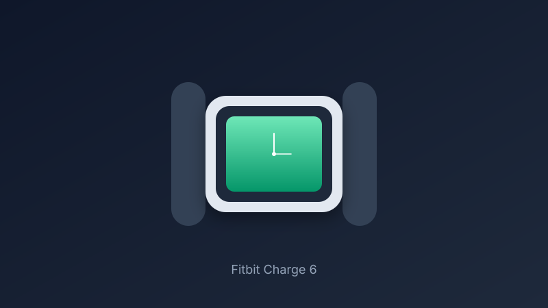

Fitbit Charge 6 Review: Slim Tracker with GPS and Google Features Under $150
The Charge 6 packs AMOLED clarity, built-in GPS, ECG, and Google Wallet into a lightweight band that often sells well under $150.
Fitness trackers have long lived in the shadow of full smartwatches, but the Fitbit Charge 6 makes a strong case for the simpler form. Street prices regularly land between $90 and $130, keeping it comfortably under $150 while delivering the health data Fitbit is known for plus a few Google-powered extras.
The 1.04-inch AMOLED display is small but crisp and colorful. It sits in a recycled aluminum case that keeps the whole tracker light (around 31 g with band) and comfortable for all-day and overnight wear. A haptic side button improves navigation over pure swipe controls, and 5 ATM water resistance covers swimming and showers.
Battery life is rated at up to seven days of typical use. Real-world mixed use with notifications and occasional GPS often lands in the five-to-seven-day range; always-on display shortens that further. Continuous GPS tracking drains faster, but for most daily runs or walks it is usable without daily charging. Charging takes about two hours via the included cable.
Health tracking is the core strength: continuous heart rate, SpO2, skin temperature, stress management, sleep stages, and an ECG app for atrial fibrillation screening. More than 40 exercise modes cover running, strength, HIIT, and more. Built-in GPS (plus dynamic phone-assisted mode) lets you leave the phone behind for shorter outings, though accuracy can vary compared with dedicated GPS watches. Google Wallet, Maps turn-by-turn cues, and YouTube Music controls add practical smart features when paired with a phone. The Fitbit app remains one of the cleaner health dashboards available.
Trade-offs are typical for the category: no full app store, some advanced insights behind a Premium subscription, and a screen that prioritizes glanceable data over rich interfaces. If you want reliable daily health metrics, solid battery, and a tracker that disappears on the wrist rather than a miniature computer, the Charge 6 is one of the best values under $150.
Key Takeaways
- Price Range: ~$90 – $130 (Amazon, frequently on sale under $150)
- Display: 1.04-inch AMOLED, lightweight aluminum case
- Battery: up to 7 days typical use, ~2-hour charge
- Tracking: built-in GPS, ECG, SpO2, sleep, 40+ modes, Google Wallet